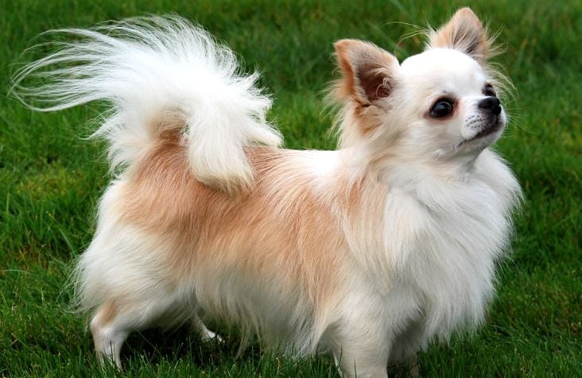

Com seu latido marcante, mostra sempre que está presente e quer atenção. É praticamente impossível passar por um cachorro Chihuahua e não notar sua presença. E não falamos isso por ser uma raça de grande porte — muito pelo contrário. Esse cãozinho tão especial é bem pequenino, mas chama a atenção pelo seu forte latido e pela sua estrutura corporal, extremamente delicada. Quem pensa que por ser pequeno o Chihuahua é um cãozinho calmo e inofensivo, está bastante enganado. A raça é considerada uma das mais antigas, corajosas e leais aos seus tutores. No entanto, ele não é de muitos amigos e pode não se dar muito bem com estranhos, principalmente, com as crianças.
O latido não é a única característica marcante da raça Chihuahua. Esses cãezinhos também são extremamente ativos e velozes. Por serem considerados cães de guarda, ao notar qualquer barulhinho, por menor que seja, eles logo correram até o local para saber o que está acontecendo, com toda disposição Tanta energia exige que esse cãozinho pratique exercícios físicos com muita frequência. Tenha sempre por perto alguns brinquedinhos e reserve um tempo para se divertir ao seu lado. Com certeza ele irá adorar!
O Chihuahua é um pet extremamente leal e irá adorar passar momentos grudadinhos ao seu tutor. Tanta lealdade faz o pet se apegar a uma só pessoa, estranhando os demais. Por esse motivo, ele pode não ser uma boa opção para tutores que recebem muitas visitas em casa. Se você deseja se tornar amigo dessa raça, inicie o contato com calma. Apesar de teimoso, o Chihuahua tem muito amor para dar! Respeitando o tempo do pet e lidando com o seu temperamento, em pouco tempo, ele se tornará muito mais amigável.
Fizemos um gráfico nivelando de 0 a 5 as características da raça, veja a baixo!
As características de um Chihuahua adulto são bem marcantes. A cabeça é bem redonda e pequena em relação ao tamanho dos olhos. As orelhas são grandes e sempre estão em alerta a tudo que acontece. Além disso, os pelos do Chihuahua são curtos, não exigem tantos cuidados especiais e, como falamos, podem ser encontrados em diversas tonalidades e combinações.
O Chihuahua não demanda banhos frequentes, mas são necessários para evitar infestações e manter seus pelos macios. Apesar de sua resistência e baixa propensão a doenças, sua intolerância ao frio devido aos pelos curtos pode ser notada, levando a tremores. Se esses tremores ocorrerem com frequência, é recomendável procurar um veterinário para garantir a saúde do pet.

Os Chihuahuas adultos são muito pequenos e seus filhotinhos são menores ainda! Tanta fofura merece cuidados especiais, sendo assim, oferecer uma ração de acordo com essa faixa etária promoverá um desenvolvimento muito melhor ao pet. Não esqueça que durante os primeiros 30 dias de vida, tudo o que o pequeno precisa está presente no leite materno. É essencial que toda mamãe amamente o seu filhotinho, para garantir uma vida mais saudável. Alguns medicamentos também são recomendados na infância. Ainda mais para os Chihuahuas, que são extremamente curiosos e podem ingerir qualquer coisa que verem pela frente. Um deles é o vermífugo, que o protegerá de vermes e parasitas e deverá ser oferecido ao longo dos anos.